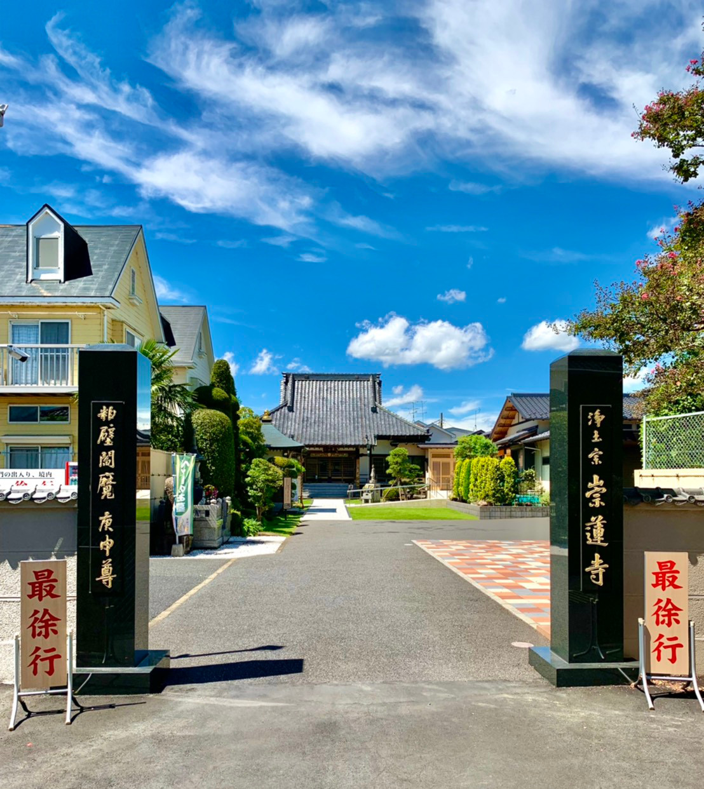

当山は山号を普照山、院号を念仏院、寺号を崇蓮寺と号し、法然上人を宗祖とする浄土宗の寺院であります。
江戸幕府官選の地誌『新編武蔵風土記稿』には次のような記載があります。
「昔、粕壁宿に関根太兵衛という人がいた。その妻がどうしたことか、この寺の前の池で水死した。太兵衛はこれを哀れみ、妻の冥福を祈って、庵を建て蓮池庵と名付けた。その後、太兵衛が願い上げ、蓮池庵を寺としたのが崇蓮寺である。」
寺のできた年代は、妻の死が明暦二年(1656)であったので、この頃と推定されます。開山上人、澄蓮社忍譽上人吟随大和尚(1675寂)より現在第二十六世住職に至るまでに、本堂・庫裏・境内・墓地整備が整い、宗祖法然上人のお念仏の教えを広め、ご先祖様方のいらっしゃる極楽浄土に往生させて頂けるよう、日々「南無阿弥陀仏」のお念仏のお称えを相続することを第一の目的としております。

| 崇蓮寺に伝わる伝説 |
|---|
| 元新宿に関根太兵衛という人がいた。妻は新川村の白石家から嫁に来たが、蛇の霊に取り付かれ、毎夜崇蓮寺池に身を沈めていた。毎夜ぬれ髪を乾かす妻の様子に不審を抱えていた太兵衛が、ある晩家を抜け出した妻の後を追うと、妻の姿は崇蓮寺池の前で消えてしまった。彼は戻って妻の部屋をうかがっていると、やがて帰ってきた妻はぬれた髪を乾かし始めた。彼は思わず“正体見届けたぞ”と叫んだ。この声を聞くと妻は家を飛び出し、蛇と変わり池の中に消えた。池の水はたちまち赤色に変わり、この池を赤堀池というようになった。 |